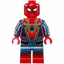
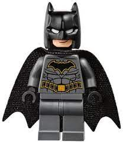
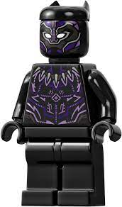

Бэтмен
Бэ́тмен (англ. Batman), изначально Бэт-мен (англ. Bat-man «Человек-летучая мышь») — персонаж комиксов издательства DC Comics, впервые появившийся в Detective Comics («Детективные комиксы») № 27 в мае 1939 года, Бэтмен является одним из самых популярных и известных героев комиксов. Был создан художником Бобом Кейном в соавторстве с писателем Биллом Фингером. До недавнего времени Боб Кейн считался главным создателем персонажа, но в 2015 году, после множества исследований, авторство было передано Биллу Фингеру, так
